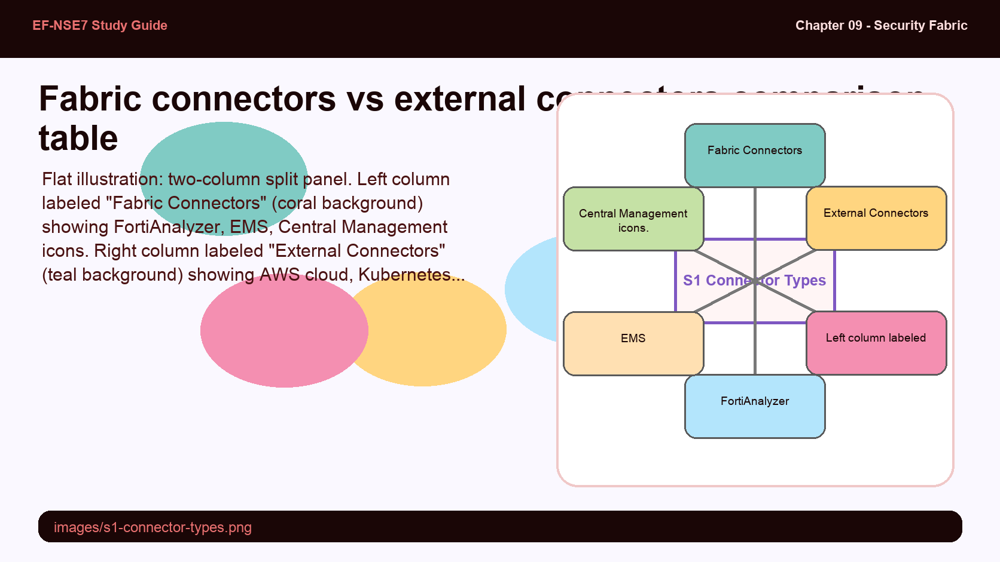
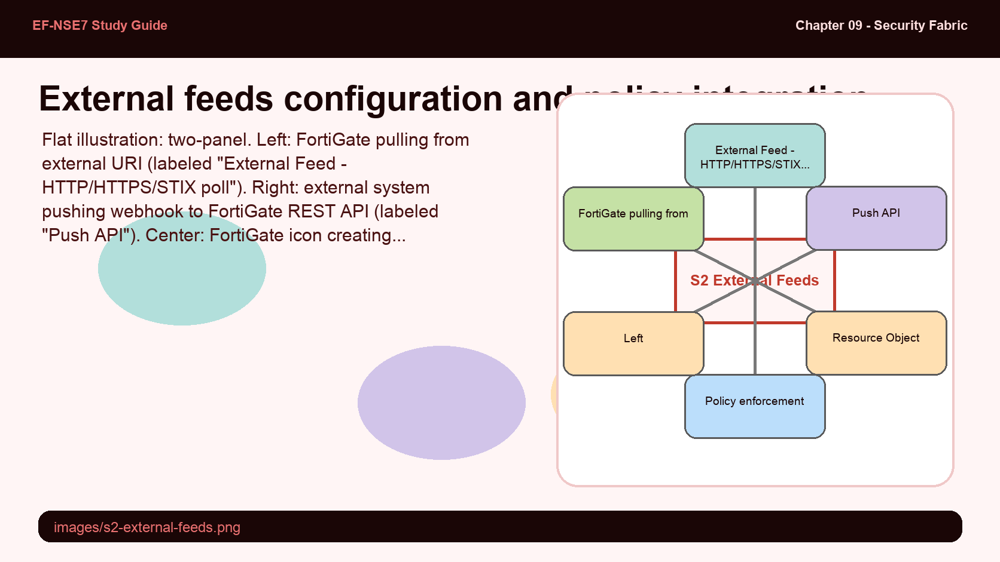
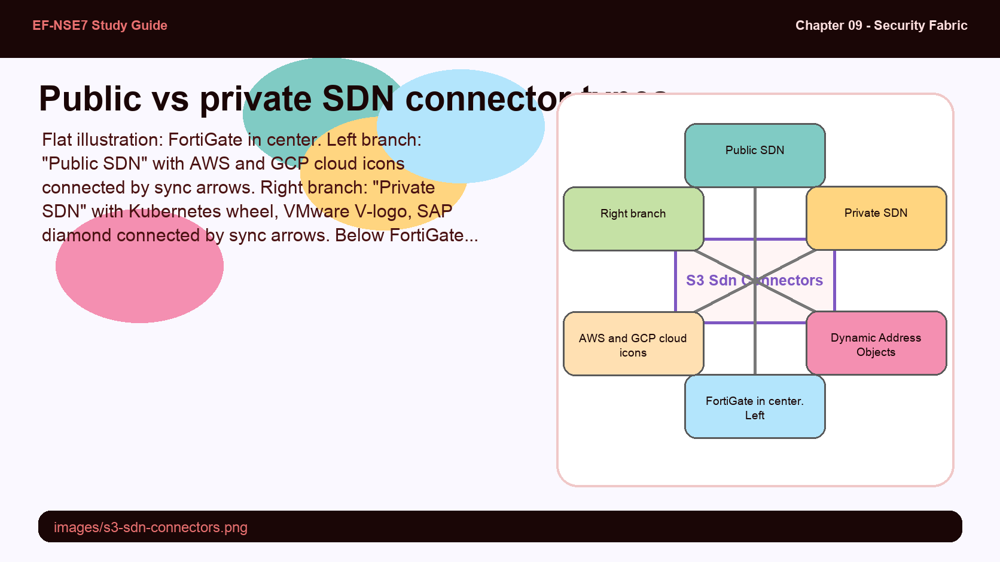
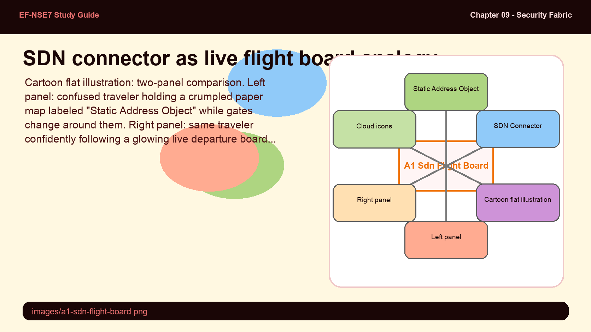
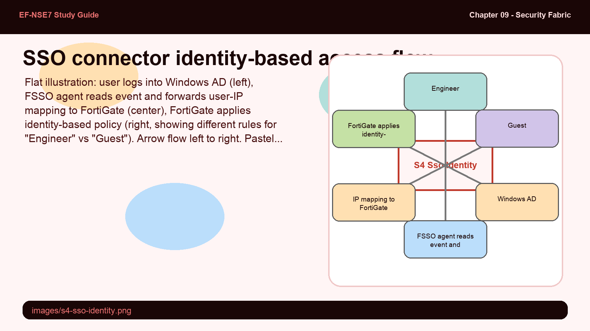

The Security Fabric has two distinct connector categories, each with a different GUI location on the root FortiGate. The naming is straightforward once you understand the principle: "fabric connectors" are for the Fortinet ecosystem, "external connectors" are for everything else. But the details of what lives under each — and what interactions each enables — are frequently tested.
- What is the key architectural difference between a fabric connector and an external connector — not just what they connect to, but what kind of interaction they enable?
- Why are EMS connectors classified as fabric connectors rather than external connectors, even though EMS manages endpoint software?
Fabric Connectors vs. External Connectors

Left column: Fabric Connectors (Fortinet products). Right column: External Connectors (third-party, cloud, SDN, threat feeds).
Both connector types are configured on the root FortiGate, but they appear in different GUI menus. Fabric Connectors are found under Security Fabric > Fabric Connectors and focus on connecting Fortinet technologies. External Connectors are found under Security Fabric > External Connectors and enable integration with a multivendor ecosystem.
| Category | Fabric Connectors | External Connectors |
|---|---|---|
| GUI Location | Security Fabric > Fabric Connectors | Security Fabric > External Connectors |
| Core / Network Security | FortiGate, FortiAnalyzer, FortiClient EMS | — |
| Security Fabric | Central Management, Sandbox, additional | — |
| Public SDN | — | AWS, GCP |
| Private SDN | — | Kubernetes, VMware, SAP |
| Endpoint / Identity | — | FSSO, RADIUS |
| Threat Feeds | — | FortiGuard category, Malware Hash |
While fabric connectors focus on Fortinet technologies, external connectors allow integration with a multivendor ecosystem. Using APIs, scripts, or specific code, the Security Fabric provides automatic updates in dynamic environments such as public and private clouds. EMS connectors enable automated actions like quarantine. Additional fabric connectors support interaction with FortiDeceptor, FortiMail, FortiMonitor, FortiNAC, FortiNDR, FortiPolicy, FortiTester, FortiVoice, and FortiWeb.
External feeds extend FortiGate's blocking capability beyond its own database — but the feed has to get its data into FortiGate somehow. There are two distinct delivery mechanisms, and the difference between them matters for firewall policy design and troubleshooting.
- What is the difference between the "External Feed" and "Push API" update methods, and when would you choose Push API over External Feed?
- Once an external feed is configured, how does it become usable in a firewall policy?
External Connectors — External Feeds

External feed creates a resource object usable as a firewall policy source/destination; updated via HTTP(S)/STIX poll or Push API webhook.
External feeds allow you to enforce special security requirements defined in an external list on FortiGuard categories, IP addresses, domain names, MAC addresses, and malware hashes. External feeds are dynamically synchronized and updated periodically so FortiOS immediately imports any changes.
There are two update methods. External Feed mode requires configuring the URL of the external resource using HTTP, HTTPS, or STIX — FortiOS polls the URI on a schedule. Push API mode inverts the flow: the external feed receives entry updates from webhook requests sent to the FortiGate REST API. Push API enables near-real-time updates when the external system can initiate connections to FortiGate.
When you create an external feed, a resource object corresponding to the dynamic list becomes available automatically. You can then configure a firewall policy with this new resource object as source or destination. External feeds import plain text format files; the feed content type determines what kind of resource object is created (IP address, domain, MAC, etc.).
Cloud environments have a fundamental problem for traditional firewalls: VM IP addresses change constantly. Static address objects become stale within hours. SDN connectors solve this by making FortiGate's address objects self-updating — but understanding the public vs. private SDN distinction tells you which connector to use in which environment.
- Why are public cloud providers (AWS, GCP) and private SDN platforms (Kubernetes, VMware) placed in separate SDN connector categories?
- What specific problem does an SDN connector solve that a manually updated static address object cannot?
SDN Connectors — Public and Private Cloud

SDN connectors keep FortiGate address objects synchronized with dynamic cloud environments automatically.
SDN connectors are a category of external connector that ensures FortiGate automatically receives updates about cloud environment attribute changes — most importantly, changes to address objects when VM IPs change or new resources are provisioned. Without SDN connectors, administrators would have to manually update firewall address objects every time the cloud environment changes.
Public SDN connectors cover cloud providers: AWS and GCP (Google Cloud Platform). Private SDN connectors cover on-premises and private cloud platforms: Kubernetes, VMware, and SAP. Both categories use APIs to retrieve current resource attributes and push updates to FortiGate address objects in real time.
An SDN connector is like a real-time flight board at an airport: instead of you checking each gate manually (updating static address objects), the board automatically reflects every gate change as it happens.
- Static address object — a printed airport map that becomes wrong the moment gates change
- SDN connector — the live departure board wired directly to the airline's system
- Cloud VM IP change — a gate reassignment that happens without notice
- FortiGate policy enforcement — routing passengers (traffic) to the right gate automatically

Single sign-on connectors solve an identity problem: FortiGate needs to know who a user is, not just what IP address they're coming from. FSSO and RADIUS serve this role. The critical question is what happens when the identity source provides conflicting information — and what "single sign-on" actually means from FortiGate's perspective.
- What does an SSO connector allow users to do that they couldn't do with only IP-based firewall policies?
- How does a threat feed connector differ from a standard FortiGuard subscription in terms of the data source and update mechanism?
SSO Connectors and Endpoint/Identity Integration

SSO connectors translate user identity from FSSO or RADIUS into FortiGate policy enforcement without prompting for credentials again.
SSO (Single Sign-On) connectors in the External Connectors category allow users to enter their credentials only once and have FortiGate enforce identity-based policies without triggering an additional web portal login. The two primary SSO connector types are FSSO (Fortinet Single Sign-On) and RADIUS. FSSO integrates with Active Directory domain controllers or Citrix servers; RADIUS integrates with RADIUS authentication infrastructure.
Endpoint/Identity connectors bridge user identity systems into FortiGate's policy engine. Once an SSO connector is active, FortiGate can apply different firewall policies based on who is logged in, not just what IP they use. This is essential in environments where multiple users share workstations or where DHCP reassigns IPs frequently.
Rounding out the External Connectors category, threat feed connectors allow FortiGate to import external dynamic lists — custom IP blacklists, domain blocklists, or malware hash databases from third-party sources. These supplement FortiGuard's built-in threat intelligence with organization-specific or industry-specific feeds.